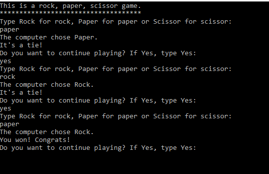

O projeto mais elaborado que já fiz foi o de um sensor de grama, que monitorava regiões onde os proprietários não visitam com frequência, mandando uma notificação e possibilitando o contato com algum jardineiro para manter a casa em bom estado.
Fiz um jogo de pedra, papel e tesoura na linguagem de programação C. Ele é jogado no terminal do comptador. Nesse jogo, você escolhe se quer jogar pedra, papel e tesoura e o computador escolhe uma das opções aleatoriamente, depois é mostrado na tela se você ganhou, perdeu ou empatou.
Links para outras páginas :